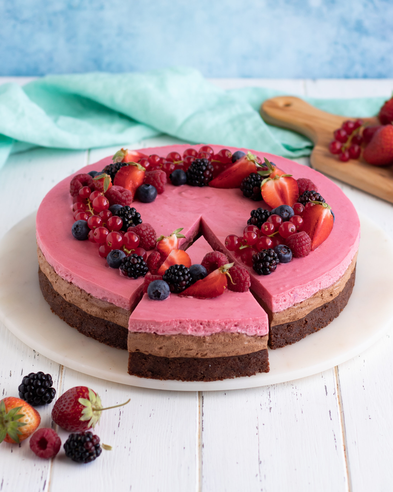

Mousse Cake

Description
This recipe was one I found on koket.se from Camilla Hamid, an excellent recourse
for anything pastry related!
The recipe takes a long time to follow since the cake itself has three layers which all
need some time to settle before moving over to the other layers. If you are to follow
the recipe then an amazingly wonderfully looking and tasting cake awaits.
Ingredients
Bottom part
- 150 g butter
- 2 dl powdered sugar
- 1,25 dl brown sugar
- 2 tsp vanilla sugar
- 3 eggs
- 2,5 dl flour
- 0,5 dl cacoa
- 1 ml salt
Middle part
- 100 g dark chocolate (atleast 55% cacoa)
- 2 eggyolks
- 2 dl whipped cream
Third part
- 225 g frosen raspberry
- 2 tbsp water
- 0,5 tsp agar-agar
- 1 dl powdered sugar
- whipped cream
Steps
Top part
- Put the over on 175 degrees celcius on over- and heat and line a 23cm diameter springform with baking paper.
- Melt the butter in a scaucepan and let it cool down. Mix the butter with the rest of the ingredients
in a bowl just to the point where it all comes togheter into an even batter.
- Pour the batter into the spring form and let it bake in the middle of the over for 15-20 minutes
or until the sides of the bottom are solid while the middle is a little wobbly.
- Let it cool down in the fridge for atleast 4 hours, preferably the bottom should cool in the fride for the whole night.
Middle part
- Chop the dark chocolate roughly and put it in a heat resistant bowl
- Melt the chocolate over a waterbath or in a microwave.
- Mix an eggyolk at a time into the warm chocolate. Mix with every yolk. The batter
will get thicker and thicker with every yolk.
- whip the whipped cream in another bowl until it has soft peaks with a whisk, electrical or otherwise.
- Mmix down 1/3 of the whipped cream into the chocolate batter. After mixing, mix the batter into the rest of the
whipped cream and mix it into an even batter.
- Pour the batter into the springform, on top of the first layer that you've made. Even
the batter out and put it into the fridge for atleast 1 hour before adding the third and final layer.
Third layer
- Cook the frosen berries in a saucepan untill they have loosened entirely.
- Strain the raspberry mush to get rid of the kernels. Cook them up again togheter with the agar-agar
and powdered sugar. Let it boil while stirring for around 3-4 minutes.
- Pour it into a bowl and let it cool and thicken in room temperature. It should
become a thick and soft puré. Don't let it stay cooling for to long, as it might make the
puré hard.
- Whip the whipped cream, but not to hard, you need some margins when whipping the berrymousse down
into the whipped cream so that it mixes well. Mix the berrymousse and whip it a little. Pour
the mousse over the second layer of the cake and put the cake back into the fride and let the
top layer harden in there for atleast 2 hours.
- Done! Additional berries can be added ontop for decoration, aswell as whipped cream!